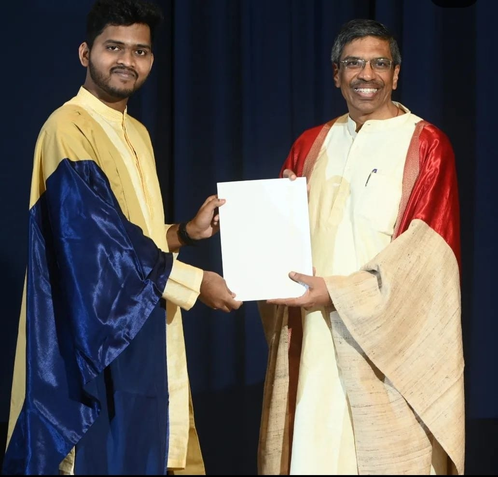

Not just research, lifelong mentorship: My journey at Sustainability Lab
About me
I am Kukunuri Rithwik. I passed out from IIT Gandhinagar with a BTech in Computer Science in 2020. I am currently working as an ML Scientist in the Search team at Nykaa. Prior to that, I worked as a Data Scientist at Reliance Jio in the IoT-ML team. In this post, I’ll talk about my experiences at Sustainability Lab.
During the start of my fifth semester Computer Science, I began a journey to explore machine learning. The interest sparked in me during the preceding summer, where I had the opportunity to explore ML.

Embarking on the ML Odyssey
Prof. Nipun just joined the campus. Seeing that his expertise was also at ML, I eagerly enrolled in a project course with him. Little did I anticipate that this decision would lead me to discover not just a project but a lifelong mentor and advisor.
In my first project under the guidance of Prof. Nipun, I decided to work on enhancing the resolution of time-series—a venture that not only enriched my technical skills but also laid the groundwork for my future endeavors.
Collaborating with Prof. Hongning Wang from the University of Virginia was an add-on bonus. By working under the combined guidance of Prof. Nipun and Prof. Hongning, I explored a lot of cutting-edge methodologies that would shape my subsequent research initiatives.
Peer Collaboration and Knowledge Sharing
The weekly paper discussions within our peer group provided a platform for knowledge exchange. Sharing insights and updates on our respective research fostered a collaborative atmosphere, where each of us gained exposure to diverse machine learning innovations applied across various domains. This not only broadened my understanding but also facilitated the cross-pollination of ideas, because I often found myself in situations where I would start using methods that my peers have been using for solving an issue that they encountered.
NILMTK: A summer endeavor
During the summer, I had the opportunity to work on NILMTK, where my primary objective was to incorporate the latest state-of-the-art disaggregation algorithms into the toolkit. Over the next two months, my fellow summer interns and I successfully engineered a packaged solution. Soon, we also took the decision to publish a paper for the BuildSys conference regarding the same. It was my first experience with technical writing, I faced many challenges with the same. My initial draft was nowhere close to where it should be, it had incomplete explanations and other writing nuances. Prof. Nipun gave me pinpointed feedback and helped me get better at writing papers.
Amidst the journey, life threw a curveball in the form of a severe stomach infection just two weeks prior to the paper submission deadline. Prof. Nipun not only empathized with my situation but also extended the gesture of taking me to a hospital in Ahmedabad. It led to realization that I had a mentor willing to go to great lengths to support me.
Our efforts came to fruition, as the paper was accepted in the conference. The elation I felt upon acceptance was profound. This entire experience improved my technical abilities significantly.
Transformation as a Data Scientist
During my final year at IIT Gandhinagar, I approached Prof. Nipun seeking guidance on transitioning to a full-time career in data science. Despite possessing solid knowledge of machine learning, my challenge was securing interview opportunities rather than a skill deficiency. With Prof. Nipun’s support, I gained access to interviews at esteemed organizations like Bidgely, Wadhwani AI, and Reliance Jio.
I landed my first job as a data scientist at Reliance Jio, thanks to Prof. Nipun. He’s willing to leverage both his academic and professional networks, going above and beyond to ensure our success.
Edge Methodologies in NILM: A Swift Research Venture
Amidst the abrupt conclusion of my time at IIT Gandhinagar due to the pandemic, I embarked on a remarkable research journey during my final semester. Prof. Nipun presented a unique opportunity – explore edge computing methodologies in the context of NILM, and submit our findings to Buildsys.
With the deadline just six weeks away, time was of essence. Within two days, we outlined methodologies and devised an action plan. Collaborating with fellow ML enthusiasts from IITGN, we worked collectively on the submission . My honed technical skills since the past two years facilitated rapid implementation of chosen methodologies. Similarly, my technical writing skills also have improved with the previous experiences. Soon, we were able to submit an excellent initial draft. Two months later, we got the news that our submission got accepted. I felt a sense of accomplishment as we delivered quality work within the tight six-week time frame.
Conclusion
I’ll end my note with an ML analogy Before joining the sustainability lab, my passion resembled an oscillating loss function—scattered and lacking direction. However, working with the lab acted as a compass, defining a clear long-term objective akin to choosing a performance metric to optimize for. Over the course of two years, I applied gradient descent in my efforts, taking numerous small steps toward the goal. The presence of an exceptional mentor, serving as an optimizer, ensured I stayed on the right path throughout the journey.
The sustainability lab has been instrumental in shaping who I am today. I’m forever thankful for the valuable experiences and insights gained under the guidance of Prof. Nipun.